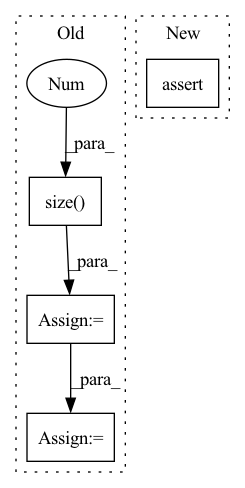

Pattern ID :2136
Before Change
if inputs is not None:
// Grouping multiple frames if necessary
if inputs.size(-1) == self.mel_dim:
inputs = inputs.reshape(B, inputs.size(1 ) // self.r, -1)
assert inputs.size(-1) == self.mel_dim * self.r
T_decoder = inputs.size(1)
// Time first (T", B, mel_dim*r)
if inputs is not None:After Change
stop_tokens = torch.cat(stop_tokens, dim=1) // (B, T_decoder)
// Validation check
assert greedy or mel_outputs.size(1) == T_decoder
return mel_outputs, stop_tokens, attn_scores
In pattern: SUPERPATTERN
Frequency: 4
Non-data size: 4
Instances Fragment ID: 13983349
Project Name: thuhcsi/tacotron
Commit Name: fea9ec535ec373aad564646f4f292fbee0217c29
Time: 2021-03-18
Author: johnson.tsing@gmail.com
File Name: model/tacotron.py
M Class Name: Decoder
N Class Name: Decoder
M Method Name: forward(4)
N Method Name: forward(4)
M Parent Class: nn.Module
N Parent Class: nn.Module
M File Name: model/tacotron.py
N File Name: model/tacotron.py
M Start Line: 87
M End Line: 187
N Start Line: 88
N End Line: 180
Before Change
def forward(self, input, demo):
batch_size = input.size(0)
time_step = input.size(1 )
feature_dim = input.size(2)
assert feature_dim == self.n_input
self.agent1_action = []
self.agent1_prob = []
self.agent1_entropy = []
self.agent1_baseline = []
self.agent2_action = []
self.agent2_prob = []
self.agent2_entropy = []
self.agent2_baseline = []
cur_h = self.init_h(demo)
if self.cell == "lstm":
cur_c = self.init_c(demo)
for cur_time in range(time_step):
cur_input = input[:, cur_time, :]
if cur_time == 0:
obs_1 = cur_h
obs_2 = cur_input
obs_1 = torch.cat((obs_1, demo), dim=1)
obs_2 = torch.cat((obs_2, demo), dim=1)
self.choose_action(obs_1, 1).long()
self.choose_action(obs_2, 2).long()
observed_h = (
torch.zeros_like(cur_h, dtype=torch.float32)
.view(-1)
.repeat(self.n_actions)
.view(self.n_actions, batch_size, self.n_hidden)
)
action_h = cur_h
if self.cell == "lstm":
observed_c = (
torch.zeros_like(cur_c, dtype=torch.float32)
.view(-1)
.repeat(self.n_actions)
.view(self.n_actions, batch_size, self.n_hidden)
)
action_c = cur_c
else:
observed_h = torch.cat((observed_h[1:], cur_h.unsqueeze(0)), 0)
obs_1 = observed_h.mean(dim=0)
obs_2 = cur_input
obs_1 = torch.cat((obs_1, demo), dim=1)
obs_2 = torch.cat((obs_2, demo), dim=1)
act_idx1 = self.choose_action(obs_1, 1).long()
act_idx2 = self.choose_action(obs_2, 2).long()
batch_idx = (
torch.arange(batch_size, dtype=torch.long)
.unsqueeze(-1)
.to(self.device)
)
action_h1 = observed_h[act_idx1, batch_idx, :].squeeze(1)
action_h2 = observed_h[act_idx2, batch_idx, :].squeeze(1)
action_h = (action_h1 + action_h2) / 2
if self.cell == "lstm":
observed_c = torch.cat((observed_c[1:], cur_c.unsqueeze(0)), 0)
action_c1 = observed_c[act_idx1, batch_idx, :].squeeze(1)
action_c2 = observed_c[act_idx2, batch_idx, :].squeeze(1)
action_c = (action_c1 + action_c2) / 2
if self.cell == "lstm":
weighted_h = self.lamda * action_h + (1 - self.lamda) * cur_h
weighted_c = self.lamda * action_c + (1 - self.lamda) * cur_c
rnn_state = (weighted_h, weighted_c)
cur_h, cur_c = self.rnn(cur_input, rnn_state)
else:
weighted_h = self.lamda * action_h + (1 - self.lamda) * cur_h
cur_h = self.rnn(cur_input, weighted_h)
if self.dropout > 0.0:
cur_h = self.nn_dropout(cur_h)
cur_h = torch.cat((cur_h, demo), dim=1)
cur_h = self.fusion(cur_h)
cur_h = self.relu(cur_h)
output = self.output(cur_h)
output = self.sigmoid(output)
return output
After Change
batch_size = labtest.size(0)
time_step = labtest.size(1)
feature_dim = labtest.size(2)
assert feature_dim == self.lab_dim
self.agent1_action = []
self.agent1_prob = [] Fragment ID: 13983348
Project Name: yhzhu99/covid-ehr-benchmarks
Commit Name: 41e28f49dd30d760c6c439a5cf41590262c9b76b
Time: 2022-06-24
Author: yhzhu99@gmail.com
File Name: app/models/backbones/agent.py
M Class Name: Agent
N Class Name: Agent
M Method Name: forward(2)
N Method Name: forward(3)
M Parent Class: nn.Module
N Parent Class: nn.Module
M File Name: app/models/backbones/agent.py
N File Name: app/models/backbones/agent.py
M Start Line: 118
M End Line: 204
N Start Line: 117
N End Line: 201
Before Change
if inputs is not None:
// Grouping multiple frames if necessary
if inputs.size(-1) == self.mel_dim:
inputs = inputs.reshape(B, inputs.size(1 ) // self.r, -1)
assert inputs.size(-1) == self.mel_dim * self.r
T_decoder = inputs.size(1)
// Time first (T", B, mel_dim*r)
if inputs is not None:After Change
stop_tokens = torch.cat(stop_tokens, dim=1) // (B, T_decoder)
// Validation check
assert greedy or mel_outputs.size(1) == T_decoder
return mel_outputs, stop_tokens, attn_scores
Fragment ID: 13983351
Project Name: thuhcsi/tacotron
Commit Name: fea9ec535ec373aad564646f4f292fbee0217c29
Time: 2021-03-18
Author: johnson.tsing@gmail.com
File Name: model/tacotron2.py
M Class Name: Decoder
N Class Name: Decoder
M Method Name: forward(4)
N Method Name: forward(4)
M Parent Class: nn.Module
N Parent Class: nn.Module
M File Name: model/tacotron2.py
N File Name: model/tacotron2.py
M Start Line: 127
M End Line: 224
N Start Line: 127
N End Line: 216
Before Change
def forward(self, x, timespans=None):
device = x.device
batch_size = x.size(0)
seq_len = x.size(1 )
hidden_state = [
torch.zeros((batch_size, self.d_hidden), device=device),
torch.zeros((batch_size, self.d_hidden), device=device),
]
outputs = []
last_output = torch.zeros((batch_size, self.d_output), device=device)
if timespans is None:
timespans = x.new_ones(x.shape[:-1]+(1,)) / x.shape[1]
for t in range(seq_len):
inputs = x[:, t]
ts = timespans[:, t].squeeze()
hidden_state = self.rnn_cell.forward(inputs, hidden_state, ts)
current_output = self.fc(hidden_state[0])
outputs.append(current_output)
last_output = current_output
if self.return_sequences:
outputs = torch.stack(outputs, dim=1) // return entire sequence
else:
outputs = last_output // only last item
return outputs, hidden_stateAfter Change
//
L = u.size(-1)
if lengths is not None:
assert isinstance(lengths, torch.Tensor) and lengths.ndim == 1 and lengths.size(0) in [1, u.size(0)]
mask = torch.where(torch.arange(L, device=lengths.device) < lengths[:, None, None], 1., 0.)
u = u * mask
Fragment ID: 13983344
Project Name: raminmh/liquid-s4
Commit Name: 52f2ec0442e4b1472915480269dff07788ed7f97
Time: 2022-08-30
Author: mlech26l@gmail.com
File Name: src/models/sequence/mm.py
M Class Name: mmRNN
N Class Name: mmRNN
M Method Name: forward(5)
N Method Name: forward(3)
M Parent Class: nn.Module
N Parent Class: nn.Module
M File Name: src/models/sequence/mm.py
N File Name: src/models/sequence/mm.py
M Start Line: 83
M End Line: 108
N Start Line: 89
N End Line: 123